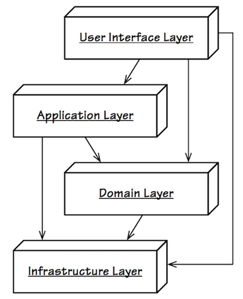
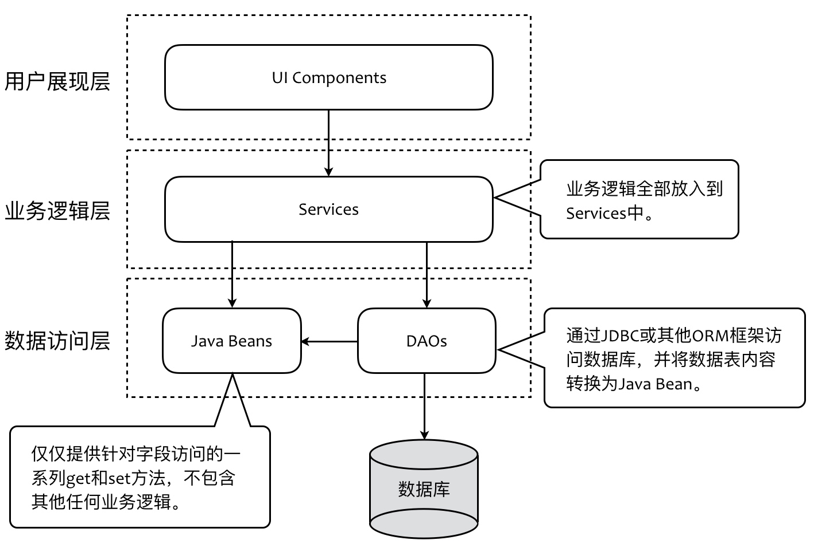

DDD学习笔记
什么是领域驱动
数据模型驱动
传统服务建模的过程是先通过业务分析数据模型，然后在关系型数据库上基于范式设计数据库表以及表之间的关系。最后通过ORM建立起数据持久化对象和数据库表之间的映射。还要通过数据访问对象(DAO)来操作数据持久化对象。
由于持久化对象和数据访问对象都不包含业务逻辑，服务就成为了业务逻辑的唯一栖身之地。这时，持久化对象是数据的提供者，实现服务时就会非常自然地选择事务脚本（Transaction Script）模式。
《企业应用架构模式》对事务脚本的定义为：
使用过程来组织业务逻辑，每个过程处理来自表现层的单个请求。这是一种典型的过程式设计，每个服务功能都是一系列步骤的组合，从而形成一个完整的事务。注意，这里的事务代表一个完整的业务行为过程，而非保证数据一致性的事务概念。
不要因为事务脚本采用面向过程设计就排斥这一模式，相较于对编程范式的偏执，我认为 Martin Fowler 在书中说的一句话更加公道：
“不管你是多么坚定的面向对象的信徒，也不要盲目排斥事务脚本。许多问题本身是简单的，一个简单的解决方案可以加快你的开发速度，而且运行起来也会更快。”
即使采用事务脚本，我们也可以通过提取方法来改进代码的可读性。每个方法都提供了一定的抽象层次，通过方法的提取就可以在一定程度上隐藏细节，保持合理的抽象层次。这种方式被 Kent Beck 总结为组合方法（Composed Method）模式：
- 把程序划分为方法，每个方法执行一个可识别的任务
- 让一个方法中的所有操作处于相同的抽象层
- 这会自然地产生包含许多小方法的程序，每个方法只包含少量代码
领域建模驱动
领域建模驱动是相对于数据建模驱动的。
领域建模驱动要先识别出领域，确定领域模型，然后再确定技术实现方案。
识别领域确定领域模型的过程需要分析清楚问题域，理清业务。所以领域驱动设计倡导的是从问题出发，先分析问题域得到业务，然后结合业务、规模、系统结构进行设计，然后再编码实现。
- 问题域——客户的需求
- 解决方案域——需求的实现
问题->领域->业务逻辑->规模->结构->实现
DDD为什么突然火了
微服务的划分粒度如何把握。
纵观软件设计的历史，不是分久必合、合久必分，而是不断拆分、持续拆分的微型化过程。
限界上下文(Bounded Context)有利于确定微服务的划分。
理论上：
- 一个微服务不要小于一个聚合
- 一个微服务不要大于一个限界上下文
如果出现如下情况说明微服务划分不合理：
- 微服务间经常需要分布式事务来支持业务数据一致性
- 对于微服务A来说，处理一个请求总是依赖另一个微服务B
- 一个微服务中出现多个名字相同的领域实体
DDD的价值
应对软件复杂度
- 从领域出发，保证软件分析模型和设计模型一致，业务人员和开发协作，保证软件质量
- 提出统一语言，确保所有概念在各自的上下文中清晰无歧义
- 提出分层架构，有效分离业务和技术，同时从垂直方向上做分隔职责边界
- 战略设计通过拆分子域和限界上下文，从横向上分隔离职责边界
- 战术设计通过引入多种领域模型概念帮助领域模型设计落地
- 引入微服务间协作的设计模式
软件为什么会复杂
主观可控：
- 业务规则 复杂
- 需求变化 不可预测
- 规模变 大
- 结构变 复杂
- 技术选型 升级
主观不可控：
- 人不够
- 人员流动
- 时间紧
- 组织架构不合理
如何应对软件复杂
关注点分离（Separation of Concern）
- 分离业务和技术
- 分层架构
- 六边形架构
- 整洁架构
- 分层
- UI层（User Interface Layer）
- 应用层（Application Layer）
- 领域层（Domain Layer）
- 技术设施层（Infrastructure Layer）
- 设计原则
- SRP (Single-Responsibility Principle)
- DIP (Dependency inversion principle)
- Interface-Oriented Programming
- Dependency Injection
- 分层架构
- 分离职责
- 限界上下文
- 聚合
- 领域


DDD的设计过程

战略设计阶段
- 问题域
- 限界上下文（Bounded Context）
- 上下文映射（Context Map）
- 核心域（Core Domain）
- 子域（Subdomain）
- 架构
- 六边形架构
- 整洁架构
- CQRS
- Event Sourcing
战术设计阶段
- 值对象（Value Object）
- 实体（Entity）
- 领域服务（Domain Service）
- 领域事件（Domain Event）
- 资源库（Repository）
- 工厂（Factory）
- 聚合（Aggregate）
- 应用服务（Application Service）

一个完整的生命周期
| 阶段 | 参与者 | 产出物 |
|---|---|---|
| 需求 | 产品经理、客户 | 需求文档 |
| KickOff | 产品经理、客户、开发负责人、测试负责人 | 明确利益相关人、对业务的共同理解、识别主要用户故事 |
| 事件风暴 | 领域专家、产品经理、DDD专家、架构师、相关开发 | 统一语言、领域模型 |
| 架构设计 | 架构师、DDD专家 | 代码包结构、技术选型、系统间通信方式 |
| 开发 | 架构师、开发 | 单元测试、代码实现 |
| 演示 | 产品经理、开发负责人、测试负责人、领域专家、客户 | 客服意见 |
| 测试 | 测试 | 测试报告 |
| 交付 | 运维、开发、测试 | 服务 |
领域模型的提炼

6W模型
- Who: 角色，一个场景中参与的用户是什么角色
- Why: 价值，解决用户什么问题
- What: 功能，需要做什么
- When: 流程，具体的业务逻辑是什么
- Where: 边界，场景的边界
- How: 实现，具体的技术实现
如何实施6W模型
1. 用例
用例名称：批量增加主机
用例目的（Why）：本用例可以帮助「角色（Who）」为其微服务一次性关联（What）符合「条件」的主机
参与者（Who）：「角色」
前置条件：微服务已经被纳管
基础流程（When）：
1. ……
2. ……
3. ……
替代流程：异常情况一
替代流程：异常情况二
2. TDD
@Autowared
private HostAppService hostAppService;
@Test
// 测试方法以描述业务的形式命名
// 不要对被测试方法写单元测试，要对领域场景编写，驱动我们识别场景分解任务
public void should_return_100_when_100_valid_hosts_registered_successfully() {
// given 驱动我们思考对象的创建，与其他对象的协作，领域对象的命名（统一语言）
Microservice microservice = Mock.one(Microservice.class);
List<Host> validHosts = validHosts(100);
// when 驱动我们思考职责边界、方法的命名、入参
int successAmount = hostAppService.registerHostsForMicroservice(microservice, validHosts)
}
// then 驱动我们思考方法的返回值、对系统的其他影响
AssertThat(successAmount, is(100));
统一语言
- 通过事件风暴获得统一语言的中文
- 标注对应英文
- 引入局外人对用例的阐述进行提问
- 统一语言要具备专业性（水，H2O）
限界上下文
限界上下文需要满足四个特征：
- 最小完备：要完备，而且要最小；不依赖外部
- 自我履行：知识专家，基于掌握的知识决定需要履行的职责，不做边界外的职责
- 稳定空间：分离内外，外部变化对内不影响
- 独立进化：自身进化对外不影响
识别限界上下文
识别限界上下文就是寻找边界：基于业务边界、技术边界，找到限界上下文的边界，进而找到工作边界、应用边界。

验证识别结果
- 是否能给限界上下文轻松的命名
- 限界上下文之间是否容易协作
上下文协作关系

上下文映射模式：
- 合作关系（Partnership）
- 共享内核（Shared Kernel）
- 客户方-供应方开发（Customer-Supplier Development）
- 遵奉者（Conformist）
- 分离方式（Separate Ways）
降低上下文之间耦合的模式：
- 防腐层（Anticorruption Layer）
- 开放主机服务（Open Host Service）
- 发布/订阅事件
附：《实现领域驱动设计》里的9种组织模式和集成模式
①合作关系（Partnership）
如果2个限界上下文的团队要么一起成功，要么一起失败，此时就是这种关系。应该为相互关联的软件功能制定好计划表，这样可以确保这些功能在同一个发布中完成。
②共享内核（Shared Kernel）
对模型和代码的共享将产生一种紧密的依赖性，对于设计来说，这种依赖性可好可坏。我们需要为共享的部分模型指定一个显式边界，并保持共享内核的小型化。共享内核具有特殊的状态，在没有与另一个团队协商的情况下，这种状态是不能改变的。我们应该引入一种持续集成过程来保证共享内核与通用语言的一致性。
③客户方——供应方（Customer-Supplier Development）
当2个团队处于一种上游——下游关系时，上游团队可能独立于下游团队完成开发，此时下游团队的开发可能会受到很大的影响。因此，在上游团队的计划中，我们应该顾及到下游团队的需求。
④遵奉者（Conformist）
在存在上游——下游关系的2个团队中，如果上游团队已经没有动力提供下游团队之需，下游团队便孤军无助了。处于利他主义，上游团队可能向下游团队做出种种承诺，但是有很大的可能是：这些承诺是无法实现的。下游团队只能盲目地使用上游团队模型。
⑤防腐层（Anticorruption Layer）
在集成2个设计良好的限界上下文时，翻译层可能很简单，甚至可以很优雅的实现。但是，当共享内核，合作关系或客户方——供应方关系无法顺利实现时，此时的翻译将变得复杂。对于下游客户来说，你需要根据自己的领域模型创建一个单独的层，该层作为上游系统的委派向你的系统提供功能。防腐层通过已有的接口与其他系统交互，而其他系统只需要做很小的修改，甚至无需修改。在防腐层内部，它在你自己的模型和他方模型之间进行翻译转换。【为每个防腐层定义相应的领域服务】
⑥开放主机服务（Open Host Service）
定义一种协议，让你的子系统通过该协议来访问你的服务。并且需要将协议公开。
⑦发布语言（Published Language）
在2个限界上下文之间翻译模型需要一种公用的语言。此时你应该使用一种发布出来的共享语言来完成集成交流。发布语言通常与开放主机服务一起使用。
⑧另谋他路（SeparateWay）
在确定需求时，我们应该做到坚持彻底。如果2套功能没有显著的关系，那么它们是可以被完全解耦的。集成总是昂贵的，有时带给你的好处也不大。声明2个限界上下文之间不存在任何关系，这样使得开发者去另外寻找简单的、专门的方法来解决问题。
⑨大泥球（Big Ball of Mud）
当我们检查已有系统时，经常会发现系统中存在混杂在一起的模型，它们之间的边界是非常模糊的。此时你应该为整个系统绘制一个边界，然后将其归纳在大泥球范围之列。在这个边界内，不要试图使用复杂的建模手段来化解问题。同时，这样的系统有可能会向其他系统蔓延，应该对此保持警觉。
划分团队和应用
- 基于语义相关性和功能相关性识别出限界上下文
- 基于
2PTs规则、特性团队、康威定律思想划分团队，找到工作边界 - 基于
重用性、业务变化、质量属性、技术选型等技术考虑划分应用边界，并持续重构
战略设计阶段产出物
- 利益相关人
- 业务期望和愿景
- 项目业务范围
- 业务流程
- 史诗级故事和主故事
- 根据核心参与者识别用例，输出每个参与者的用例图
- 根据语义相关性和功能相关性识别出用例主题边界，输出用例主题
- 根据主题之间的相关性识别限界上下文
- 上下文映射图或表
- 输出架构4+1视图
- 逻辑视图：限界上下文图；上下文映射图；分层架构
- 进程视图：限界上下文图；六边形架构；上下文映射
- 物理视图：六边形架构
- 开发视图：分层架构；代码模型
- 场景视图：领域场景分析；用例图
架构4+1视图举例
1. 逻辑视图

视图说明
- 系统层次的分层架构
- 限界上下文层次的分层架构
2. 进程视图

视图说明
- 在绘制系统的进程视图时，不需要将每个牵涉到进程间调用的用例场景都展现出来，而是将这些参与协作的组件以抽象方式表达一个典型的全场景即可。
- 整个进程视图非常清晰地表达了部署在不同进程之上的组件或子系统之间的协作关系，同时通过图例体现了领域驱动设计中的北向网关和南向网关与外部资源之间的协作。调用的方式是同步还是异步，也一目了然。
3. 物理视图

物理视图与进程视图虽然都以进程边界为主要的设计单元，但二者的关注点不同。进程视图是动态的，体现的是外部环境、系统各个组件在进程之间的协作方式与通信机制；物理视图是静态的，主要体现系统各个模块以及系统外部环境的部署位置与部署方式。
4. 开发视图

- 给出代码分层结构
- 分别体现出系统级代码分层结构和限界上下文内的代码分层结构
实体
值对象
聚合
引入聚合来划分对象之间的边界，保证边界内所有对象的一致性。其中作为主体的实体对象是聚合根。
聚合边界的识别
- 是否多实体同生命周期，同生同死组合关系（完整性）
- 是否单实体有独立性需求，外界需要直接和他交互（独立性）
- 是否存在不变量
- 是否处于一个事务中
规则
- 外界只能和聚合根交互
- 聚合根可以向外部传递内部实体的引用，但外部对象只能临时使用
- 聚合根可以向外部传递值对象的副本
- 只有聚合根才能直接通过数据库获得，其他实体通过聚合根获得
领域服务
存在跨聚合的业务场景时需要使用领域服务
分层架构
传统三层架构和领域驱动经典四层架构的对比：

经典三层架构

Eric Evans 在其经典著作《领域驱动设计》中的四层架构
- 领域驱动四层架构多引入了
Application Layer 业务逻辑层改名为Domain Layer，定位更具体数据访问层的名字变为Infrastructure Layer，职责扩大
对比分析
优化后的分层架构通过引入Application Layer，使Domain Layer可以专注业务逻辑，不依赖外部环境，更内聚。
Infrastructure Layer用来分离业务和技术关注点，并不只用来请求数据。
传统三层架构升级到DDD四层架构

三层架构代码模型

把Java Beans变成充血模型的POJO，并迁移到业务逻辑层。此时POJO对应DDD的Entity和Value Object，业务逻辑层变为领域层。此时领域层和基础设施层相互依赖。

通过依赖反转和依赖注入解耦领域层到基础设施层的依赖。但多了一层基础设施的抽象层。

通过DDD的Repository概念，使基础设施抽象层进入领域层。此时用户展现层仍然直接依赖领域层，领域层对外暴露太多细节。

通过引入开放主机服务，隔离开前端对领域层的直接依赖。但此时通过Controller暴露出去的服务仍然过细。

引入应用层，封装如批量查询、请求跳转、跨领域聚合的业务编排等逻辑。通过Facade模式提供高层接口。到此迁移完毕。
整洁架构

Robert Martin 提出的整洁架构
- 层次越靠内的组件依赖的内容越少，处于核心的 Entities 没有任何依赖。
- 层次越靠内的组件与业务的关系越紧密，因而越不可能形成通用的框架。
- Entities 层封装了企业业务规则，准确地讲，它应该是一个面向业务的领域模型。
- Use Cases 层是打通内部业务与外部资源的一个通道，因而提供了输出端口（Output Port）与输入端口（Input Port），但它对外的接口展现的其实是应用逻辑，或者说是一个用例。
- Gateways、Controllers 与 Presenters 其本质都是适配器（Adapter），用于打通应用业务逻辑与外层的框架和驱动器，实现逻辑的适配以访问外部资源。
- 系统最外层包括框架和驱动器，负责对接外部资源，不属于系统（仅指限界上下文而言）开发的范畴，但选择这些框架和驱动器，是属于设计决策要考虑的内容。这一层的一些组件甚至与要设计的系统不处于同一个进程边界。
微服务架构

Martin Fowler的微服务架构
整幅图的架构其实蕴含了两个方向：自顶向下和由内至外。
- 外部请求通过代表协议（Protocol）的 Resources 组件调用 Service Layer、Domain 或 Repositories，如果需要执行持久化任务，则通过 Repositories 将请求委派给 ORM，进而访问网络边界外的数据库。所谓“外部请求”可以是前端 UI 或第三方服务，而 Resource 组件就是我们通常定义的 Controller，对应于上下文映射中的开放主机服务。之所以命名为 Resources，则是因为 REST 架构是一种面向资源的架构，它将服务操作的模型抽象为资源（Resource），这是自顶向下的方向。
- 若当前微服务需要调用外部服务（External Service），且外部服务籍由 HTTP 协议通信，就需要提供一个 HTTP Client 组件完成对外部服务的调用。为了避免当前微服务对外部服务的强依赖，又或者对客户端的强依赖，需要引入 Gateways 来隔离。事实上，这里的 Gateways 即为上下文映射中的防腐层，这是由内至外的方向。
DDD的代码模型
以电商下单业务为例：

代码结构如下所示：
ordercontext.infrastructure
- OrderController
- OrderMapper
- EmailSender
- RabbitEventBus
ordercontext.application
- OrderAppService
- NotificationService
- EventBus
ordercontext.domain
- OrderRepository
- PlaceOrderService
- Order
- Notification
- OrderConfirmed
- NotificationComposer
- OrderConfirmedComposer